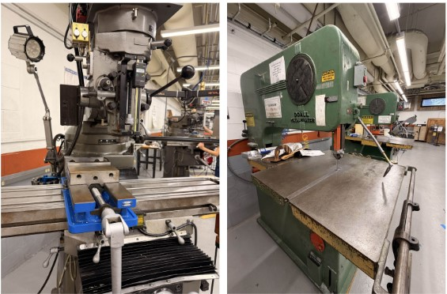
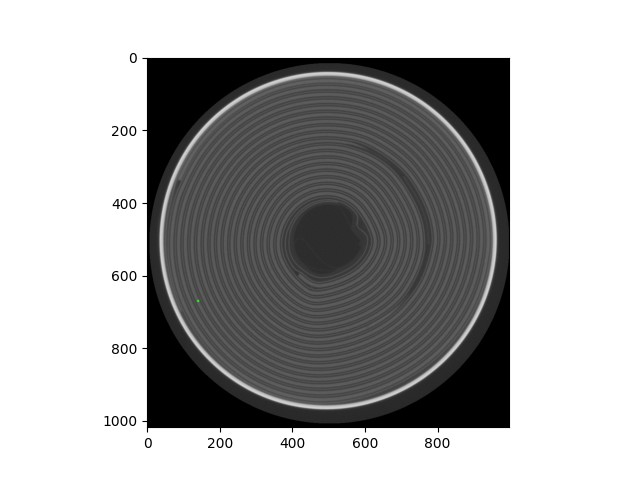

Part 1 — Experimental Setup Design & Build
Goal
Improve experimental repeatability and efficiency by designing a custom setup using available lab resources. I modeled the system in SolidWorks and then manufactured and assembled the components myself using the machine shop.
What I did
- Defined functional requirements and constraints based on lab needs
- Created SolidWorks CAD for the setup and interfaces
- Fabricated parts using machine shop tools (including CNC)
- Integrated the system into the lab workflow and iterated based on feedback

CAD Rendering of Experiment Setup and Machine-shop use
Manufacturing & Assembly
Manufacturing mindset
- Designed for manufacturability using the tools available (CNC/manual machining)
- Minimized complexity where possible (fewer parts, simpler operations)
- Planned assembly sequence early to avoid rework
Tools & skills (what employers care about)
- SolidWorks CAD + drawings for fabrication
- Basic GD&T / fit planning (functional interfaces)
- Machine shop workflow: measuring, fixturing, safe operation
- Iterative improvement from real hardware observations
Engineering takeaway: I can go from “research need” → “designed hardware” → “built and validated system,” which maps directly to test engineering and manufacturing roles.
Part 2 — Battery Defect Detection (X-ray Image Processing)
Problem
Cross-sectional X-ray images contained defects that were time-consuming to label and analyze manually. We needed a faster and more consistent way to identify defect regions and quantify them across a large dataset.
My approach
- Built a Python pipeline to detect defect candidates automatically
- Extracted measurable outputs (location, size/area, count, and distribution)
- Designed the workflow to scale to thousands of images reliably

Defect Image Detection (Highlighted with Green)
Pipeline & Engineering Choices
What the code does (high level)
- Preprocessing to normalize contrast and reduce noise
- Feature extraction / segmentation to isolate defect-like regions
- Filtering to reduce false positives (size/shape constraints)
- Batch processing + export of defect metrics for analysis
Why this matters in manufacturing
- Consistent defect detection reduces human variability
- Quantitative outputs can feed QC thresholds and process improvement
- Scalable workflow supports high-throughput evaluation
What I learned: battery failure modes, how defects present in imaging, and how to build a reliable analysis pipeline using Python + image processing.
Results & Validation
Scale + time savings
- Processed 10,000+ battery X-ray images
- Reduced processing time by 24+ hours vs manual workflow
- Enabled faster iteration on research questions
These results are summarized in my resume metrics.
How I would report accuracy (portfolio-safe)
- Spot-check set reviewed against human labels
- Track false positives/negatives per defect type
- Use threshold tuning to balance recall vs precision
(If you want, I can add a dedicated “Validation” figure once you share 1–2 example outputs.)
Impact
- Automation impact: defect analysis on 10,000+ images; 24+ hours saved
- Hardware impact: custom control/setup increased efficiency by 50%+
- Professional growth: deeper understanding of battery defects + practical Python image processing + hands-on manufacturing
Skills Highlight
Python (Image Processing)
Data Pipeline Thinking
Root Cause / Defect Reasoning
SolidWorks CAD
DFM + Assembly Planning
CNC / Machine Shop
Experiment Setup Design
Technical Communication